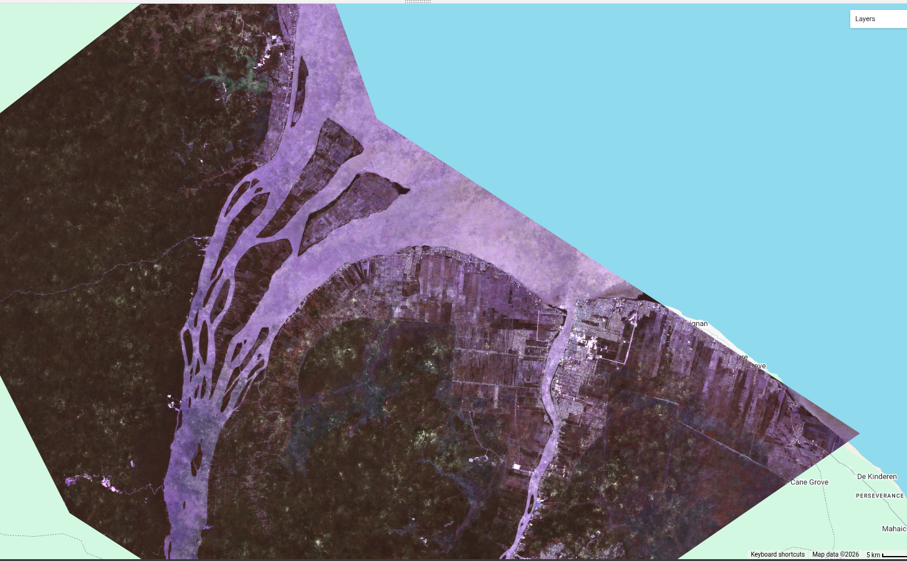

For a couple of weeks now, I've been taking part in internal training at the Guyana Lands and Survey Commission on Remote Sensing and its applications towards land admistration, particularly focusing on change analysis for land use. I'm not at all that knowledgeable in the sciences for Geospatial Analsysis but I am interested in the application of machine learning and computer vision so this training was pretty neat. I'm just gonna outline what I learnt on land change analysis here.
Remote Sensing and Waves?
Okay so here's my layman's understanding of remote sensing. There's two types, passive and active. Passive just observes using energy around us, like sunlight and heat. They depend on external energy sources. Examples includes cameras and radiometres. Active remote sensing on the other hand is well...drum roll...active, as in it actively produces its own energy for its mystical magical remote sensing purposes. Examples include LiDAR (which I've recently been diving into coincidently...but more on that some other time) and radar. Other than that, there's the general concept that waves have different lenghts (highschool physics stuff) and surface properties have different reflective / absorptive properties meaning how these waves interact with the on ground vegetation, land types and what nots is important. And that for now, is all i really understand.
How Cloud Free Mosaic's are formed
Now this here was something I genuinely never thought about until this very point but from retrospect, of course this has to be the case.
So guess what, even with satellite imagery, most of the time there's lots and lots of cloud blocking the view of given areas. In
the case of Guyana that almost always seems to be the case.
 So as we can see from the above...Guyana's can hardly be seen :). So how does one see the beautiful Guyana
when viewing 'satellite' imagery in most online maps? Simple, you "lie". So basically how it works is that
over a given time period, your prase through satellite imagery data and extract the little bits that don't
have cloud coverage and you do that over a long enough period until you get a stitched together image of what
is a 'cloud free' version of you area of interest.
So as we can see from the above...Guyana's can hardly be seen :). So how does one see the beautiful Guyana
when viewing 'satellite' imagery in most online maps? Simple, you "lie". So basically how it works is that
over a given time period, your prase through satellite imagery data and extract the little bits that don't
have cloud coverage and you do that over a long enough period until you get a stitched together image of what
is a 'cloud free' version of you area of interest.
Creating a Cloud Free Mosaic in Google Earth
The code for this can be found at Cloud free Mosaic code But honestly for most of our sessions, we utilised google gemini which worked for most cases. So something along the lines of "I'm making a cloud free mosaic for *insert country*, please give me the code to do this in google earth" should do the trick, more or less. Anyways I'm now going to 'attempt' to explain the nitbits in the code. I would've done some refactoring and made some little changes here and there to the original code that gemeni popped out. A bit of important bit is that we're only doing this for a defined area of interest in google earth, mostly cuz of on a free plan, we would not have enough compute to do the whole of Guyana :( . so do keep that in mind
function maskS2clouds(image) {
var opaque = image.select('MSK_CLASSI_OPAQUE');
var cirrus = image.select('MSK_CLASSI_CIRRUS');
var mask = opaque.eq(0).and(cirrus.eq(0));
return image.updateMask(mask).divide(10000);
}
// just a helper function for creating a colection
function create_collection(date_start, date_end) {
var sentinelCollection = ee.ImageCollection('COPERNICUS/S2_SR_HARMONIZED')
.filterBounds(guyana) // filter to guyana
.filterDate(date_start, date_end) // filter between the set date periods
.filter(ee.Filter.lt('CLOUDY_PIXEL_PERCENTAGE', 80)) // filter based on acceptable level of cloudiness
.map(maskS2clouds);
return sentinelCollection;
}
// create a mosaic based on median values
function create_mosaic(collection, area) {
var median_mosaic = collection.median();
return median_mosaic.clip(area);
}
filter(ee.Filter.lt('CLOUD_PIXEL_PERCENTAGE', 80)) which sets the threshold of
what level of 'cloudiness' is acceptable to us. Making the percentage lower in our case, would mean
we tolerate less cloudiness.
And the second function is just creating the mosaic based on our collection and clipping it to our defined area.
// create the collection
var sentinelCollection = create_collection('2025-01-01', '2025-12-31');
// create the mosaic
var guyanaCleanMosaic = create_mosaic(sentinelCollection, guyana);
// visual parameters
var visParams = {
bands: ['B8', 'B4', 'B3'],
min: 0.0,
max: 0.2
// add to map
Map.addLayer(guyanaCleanMosaic, visParams, 'Guyana Cloud-Free S2A/S2B Mosaic (2025)');
